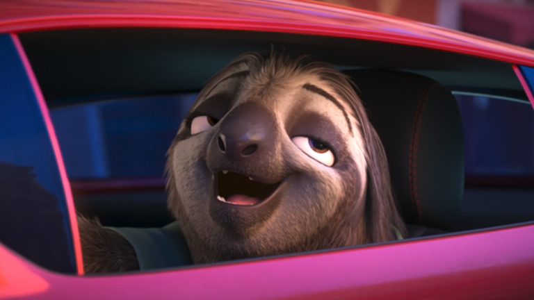
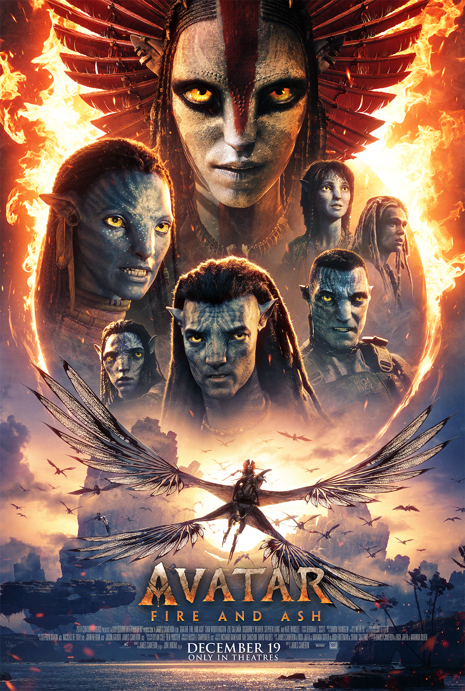

The Animation Wiki is a free, public, and collaborative encyclopedia for everything related to animation: Industry, Technical, Career
Author: Sarah El-Mahmoud
Zootopia 2 picks up just a week after the events of the first movie at a time where Nick and Judy are still figuring out how to be an effective team. They find themselves engrossed in a new mystery that will answer why reptiles haven't been living in Zootopia. When I asked the filmmakers, here's how Howard teased Flash's return:
Author: Katie Kilkenny
Production workers at Walt Disney Animation Studios officially have a first union contract.
Author: Robert A. Iger
A stunning new trailer and poster for Avatar: Fire and Ash from Oscar®-winning filmmaker Disney Legend James Cameron have arrived. The third film in the phenomenally successful “Avatar” franchise opens exclusively in theaters worldwide in IMAX 3D, Dolby Cinema 3D, RealD 3D, Cinemark XD, 4DX, ScreenX, and premium screens everywhere on December 19.
Author: Shannen Ace
Disney has filed a patent for advancements in animatronic projection technology, which could potentially use AI.

Author: Zining Luo
In Disney's animated movies, every blade of grass sways in the wind, every strand of hair is crystal clear, every movement is fluid and natural… From Mickey Mouse to every princess, each character has left an indelible impression on generations of people. For hundreds of years, Disney has created countless dreams for adults and children alike. And these household-name animations all began with a simple pencil, then rode the wave of technology to create something truly magical, from hand-drawn lines to digital wizardry. Disney's boundless imagination continues to reshape the map of the animated world, from the earliest hand-drawn sketches to electrostatic printing and now to CGI technology. Yet, innovation continues, but it all starts with that first pencil stroke.

Author: David Carrigg
Walt Disney Animation Studios has laid off employees at its Vancouver office.
Author: Matt Kieltyka
When Mariz Fahmy came to Simon Fraser University to study computing science, seeing her name as the credits rolled on a film that's taken the world by storm wasn't an outcome she imagined.
| Month | Number of site visitors |
| Sep.2025 | 30 |
| Aug.2025 | 204 |
| Jul.2025 | 400 |
| Jun.2025 | 349 |
| May.2025 | 104 |
| Apr.2025 | 345 |